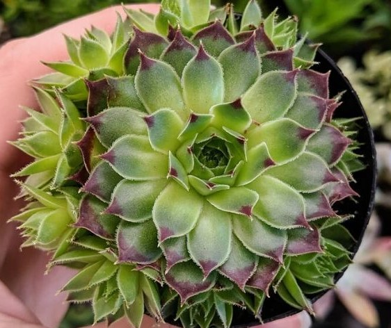
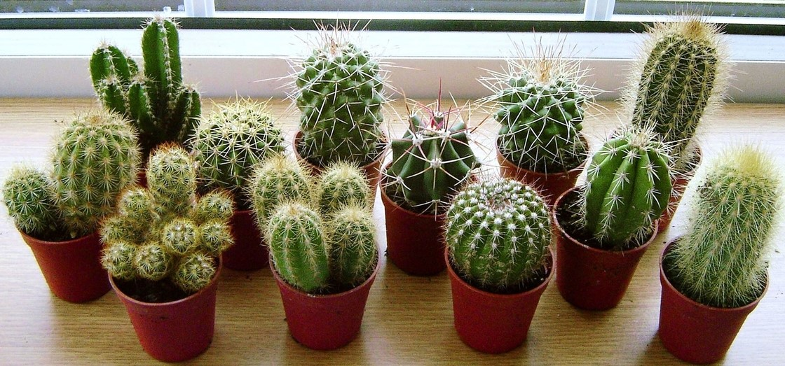
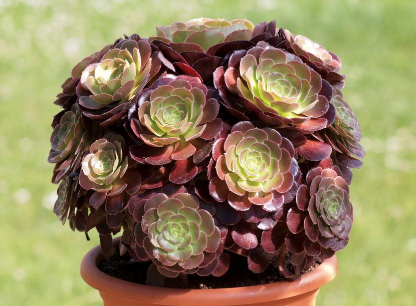
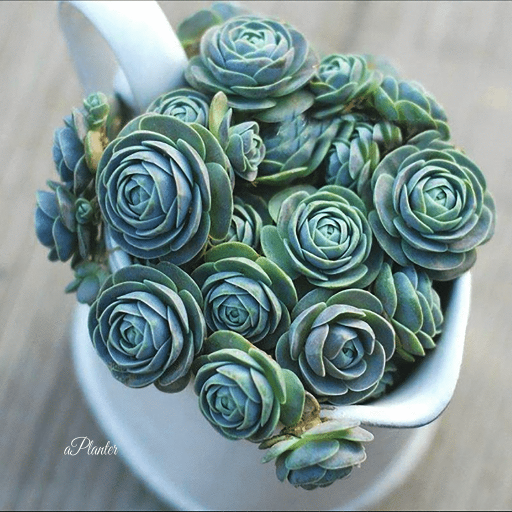
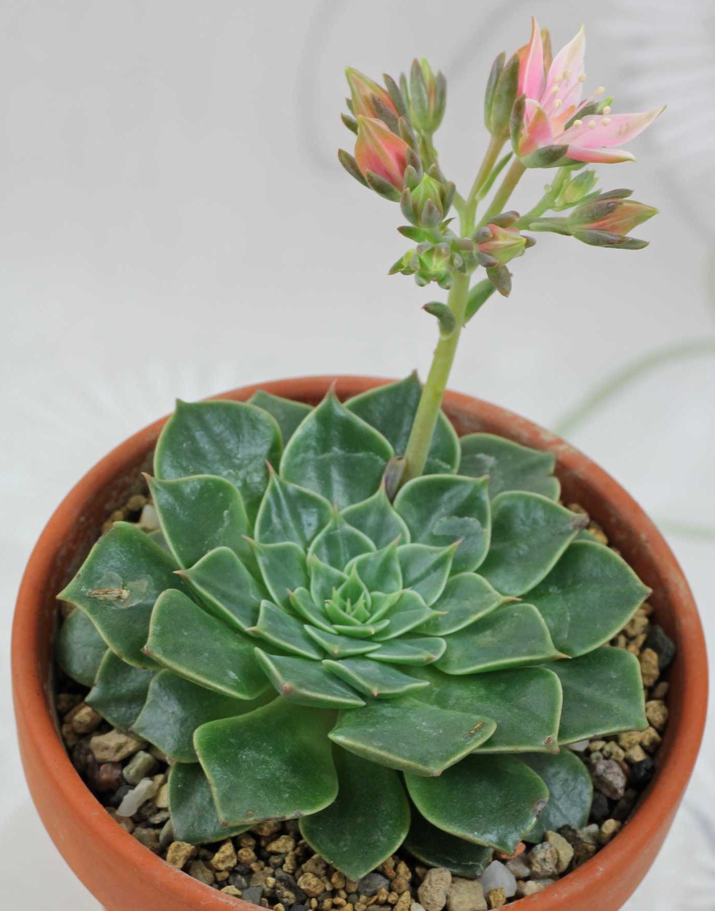
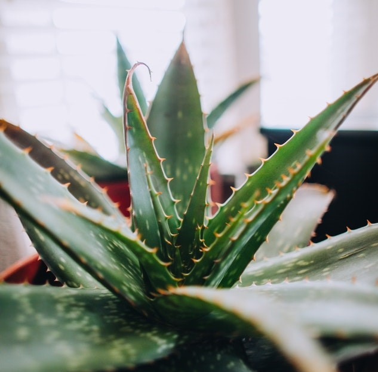

|  | SEMPERVIVUM |
- Strength and ability to spread - Blooms and generates new rosettes - Like the light - Live in rocky areas |
 |
HAWORTHIA |
- Decorative - Bilabiadas flowers - Abundant light without direct exposure - Do not expose to cold weather |
|  | CACTACEAS |
- Decorative - More than 1600 varieties of cactus - There are varieties according to the climate |
|  | AEONIUM |
- Doesn't require a lot of water - Large 20cm and 50cm rosettes - They don't grow too big |
|  | OROSTACHYS |
- Small to medium - Decorative varieties - Orostachys Spinosus supports up to -40º |
|  | GRAPTOPETALUM |
- 18 decorative species - Graptopetalum Paraguayense rosette and white flowers - Moderate irrigation in warm months and zero in cold |
|  | ALOE |
- Aloe Vera variety most famous for medicinal properties - Aloe Ferox or Aloe Aristata - They grow quite |